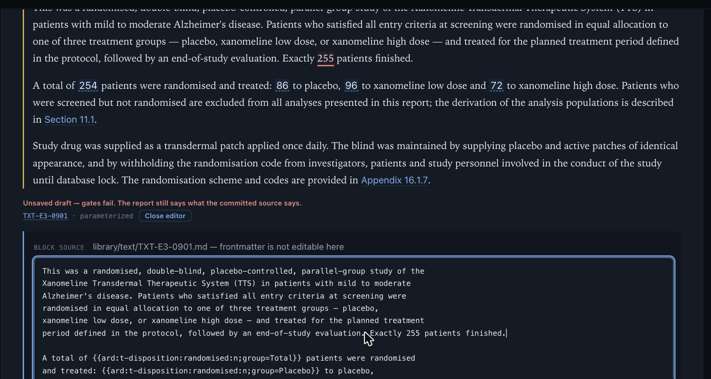
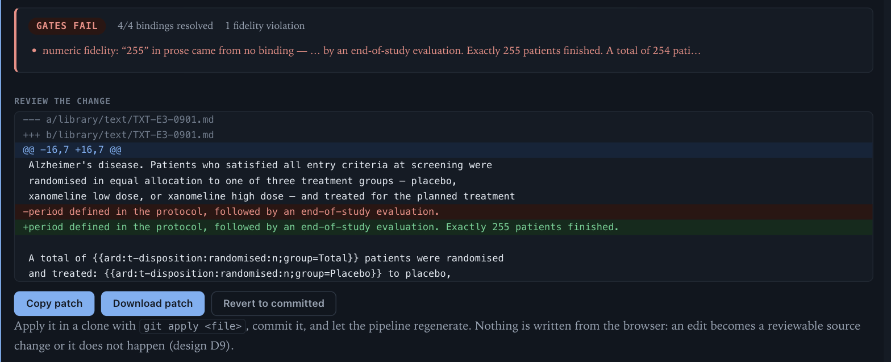
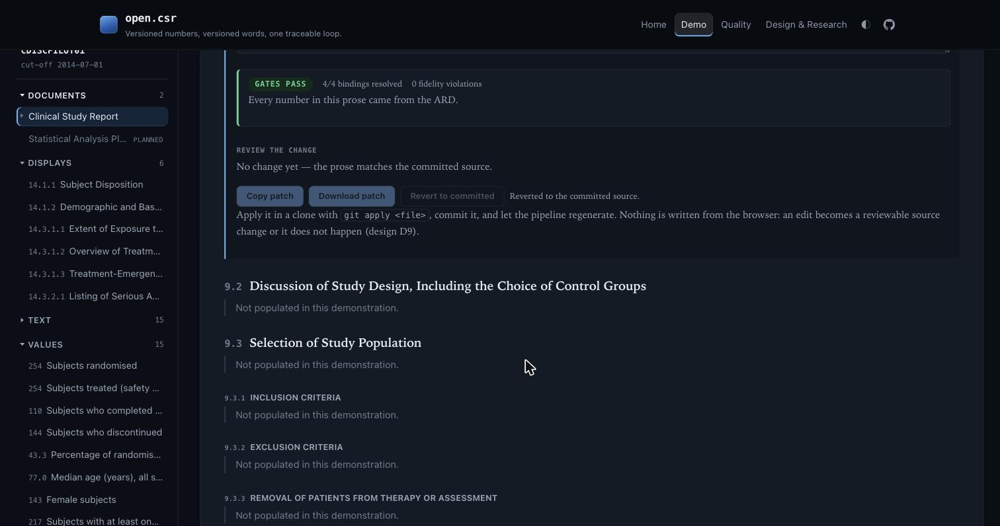
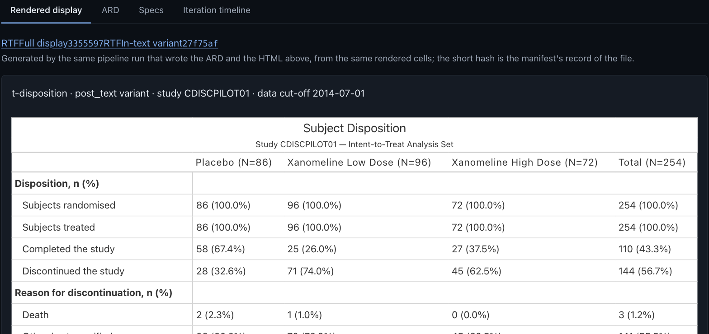
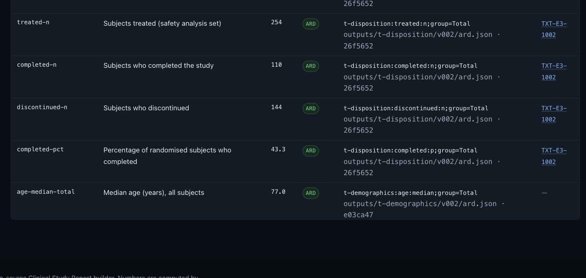
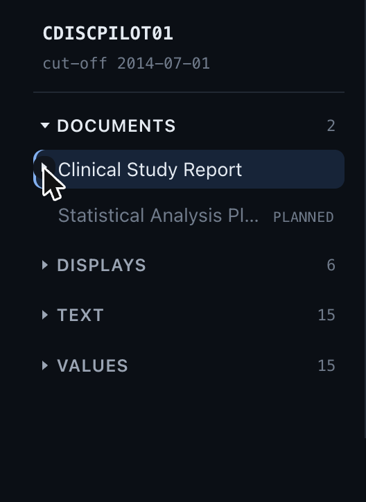
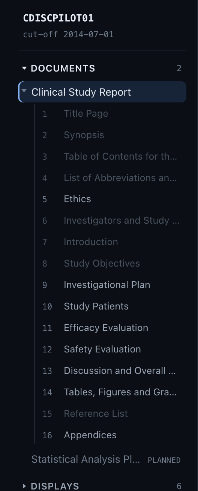

v0.1.0 assembled a Clinical Study Report you could read. v0.2.0 is the editing release: prose you can change where you read it, with every number in the sentence watched by the same gates CI runs — plus the submission-format RTFs and the named-value layer that make the numbers worth watching. Every capture below was taken from the live site; each section links into the real thing.
Every text block in the Reader carries an Edit control. It opens the block's source in a drawer directly beneath the rendered prose — the reading context never leaves the screen, and the prose above re-renders as you type. Bindings like {{ard:t-disposition:randomised:n}} resolve live against the committed ARDs, so the writer sees real numbers while editing their tokens.

The claim of the whole product in one panel. Type a number the data doesn't support and the gate fails before you finish the sentence — naming the digit and the reason. Every edit becomes a unified diff against version-controlled source with a one-click patch; nothing is ever written from the browser (design D9). Revert, and the gate says so.

git apply — an edit becomes a reviewable source change or it does not happen.
Each display now publishes submission-format RTF beside its HTML — generated by the same pipeline run that wrote the ARD, from the same rendered cells, hash-tracked in the manifest and verified in CI. The table a statistician files is the table the app shows, downloadable from the display it renders.

Fifteen study values — randomized N, median age, and the rest — are now first-class: id, label, value, and provenance back to a committed ARD row. Prose cites them by name with {{value:}} bindings, they browse on their own surface (with their numbers in the sidebar), and the fidelity gate re-derives every one, so a value that drifts from its source fails like any stale number.

The document tree collapses on standard chevrons — keyboard-accessible, with state that survives navigation. Sections the demonstration models but doesn't populate are dimmed, so a glance down the tree separates what this report fills from what it only describes. Folding the CSR shows the whole workspace at once: documents, displays, text, values.


One publishing system now serves four tiers from a single branch: the root follows the latest release, dev/ tracks integration, every same-repo pull request gets its own live preview at pr/{N}/ with a sticky comment, and — starting with this release — every major/minor release freezes its demo permanently at v{X.Y.Z}/. The cut-over from the old deploy was lossless: nine live URLs, byte-identical before and after.